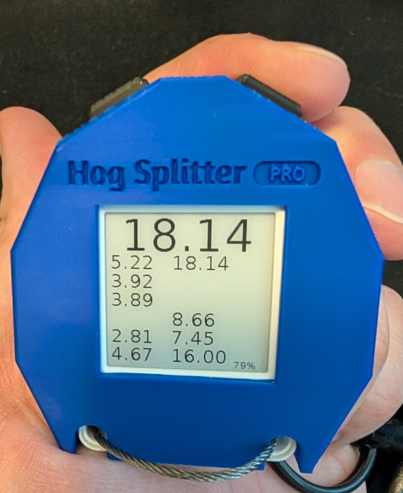

The Ultimate Stopwatch Designed for Curling Precision
Hog Splitter Pro is a revolutionary stopwatch crafted specifically for curlers. My mission was to create a tool that meets the unique timing needs of the sport with simplicity and efficiency.
Unlike other stopwatches on the market, Hog Splitter Pro combines all these features into one elegant device.
Built using a programmable microcontroller with an e-ink display, the Hog Splitter Pro prototype is housed in a custom 3D-printed ergonomic design.
As a prototype developed quickly, Hog Splitter Pro has a few areas for improvement:
Lasts 2.5 to 3 hours, sufficient for an 8-end game, but requires recharging via USB-C before each game.
While functional after a month of use, long-term durability is untested. The e-paper display may be sensitive to UV light or high temperatures (e.g., in a hot car).
The e-paper display refreshes only on button press, taking about half a second. This has not been an issue in for play testers, but some may find it bothersome.
You don't. Hog Splitter Pro is designed to be stateless with no need for a reset button.
About 2-3 hours via USB-C.
Currently, it's not for sale. Parts cost approximately $40 USD per unit, though this may vary with recent US-China tariffs.
A special thank you to Derek Corbett for his invaluable help with 3D CAD design and playtesting.
I also extend my gratitude to Drew Tingen for brainstorming ideas and contributing to playtesting.
We're eager to partner with a curling supplies company to refine Hog Splitter Pro. By moving beyond the Core Ink kit to a custom-designed device, we aim to enhance battery life, durability, and overall performance.
If you have connections in electronics manufacturing or are interested in collaboration, we'd love to discuss further.
Have questions or want to collaborate? Reach out through the following channels:
Email: curl@tgau.me
Discord: @trevorsg